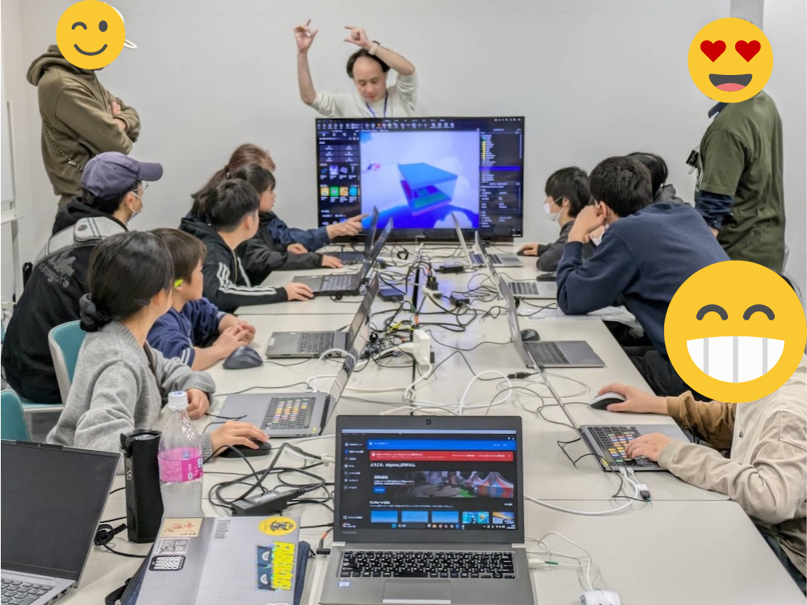
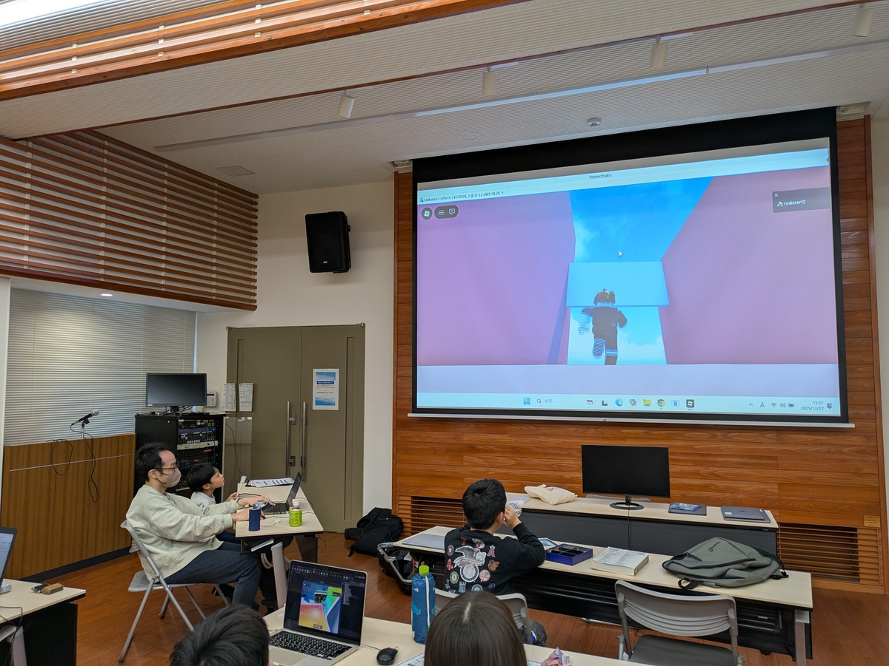
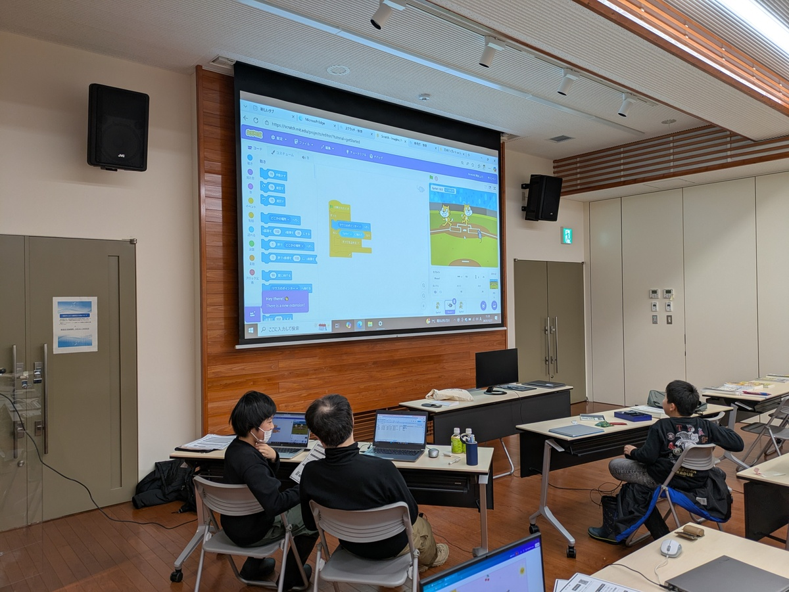
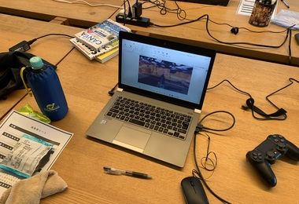
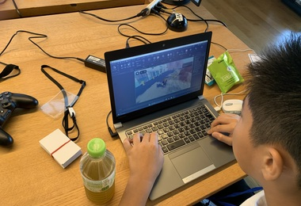
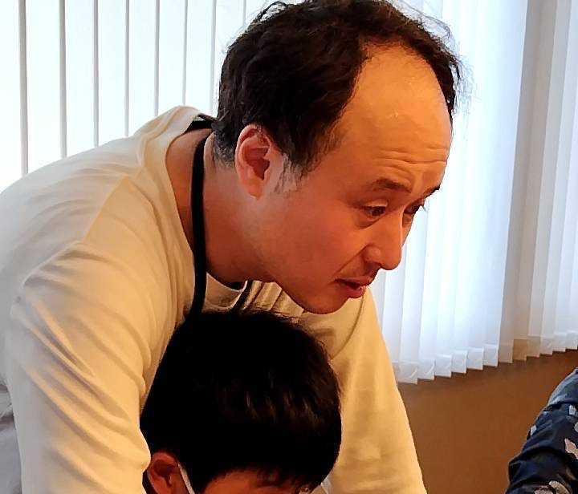
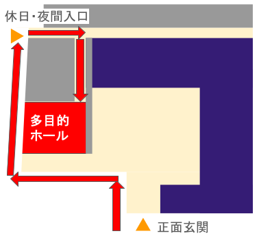

75%
楽しそうだった（親御さん）
小学1年生〜高校3年生/参加費無料
CoderDojo 南会津は、子どもたちの非営利コミュニティです。エンジニアリングの体験としてRobloxやAIを使った制作体験を中心に、「ゲームを作ってみたい」を応援する形をとっています。

講師（チャンピオンと呼びます）は隣で一緒に考える仲間として伴走します。RobloxやAIの教材はチャンピオンが首都圏での教室で使用しているオリジナル教材を豊富に用意しています。
About
「このゲームを作りたい」を起点に、RobloxやAIを使って手を動かしながら学ぶ体験会です。受動的な学びではなく、自分のペースで進める時間を大切にします。田島プログラミングクラブとして、地域の学びをゆっくり育てています。
メンターは教える人ではなく、隣で一緒に試す仲間。失敗しても大丈夫、ぶつかってみて初めてわかる感覚こそが、次の一歩をつくります。ゲーム業界の実務経験をもとに、企画から改善までの考え方もわかりやすく伝えます。
他の地域とは違い、広域な地域です。お友達の親御さんやおじいちゃん、おばあちゃんのご送迎もありがたい地域活動と感じております。


Why Join
RobloxやAIを使った最新のゲーム制作が体験できます。
プログラミングに限らず、「作りたいもの」を自由に試せる時間があります。
初めての方でも発表シートがあるので安心です。回を重ねるごとに、自分の作品を人前で話す力がついてきます。
Check


毎回の活動の様子は、noteで報告しています。 noteで活動報告を読む
Voice
参加したご家庭からいただいた声を、数字とコメントでまとめました。
75%
楽しそうだった（親御さん）
100%
ご家庭で話題にできそう
75%
友達とも参加したい（子供）
実際に子どもたちから出てきた言葉です。
「ゲームが作れてうれしかった」
「楽しかったです」
「ゲームを作ったことが楽しかった」
「くるまを使ったことが楽しかった」

CoderDojoチャンピオン
私は南会津町（旧田島町）の高野で生まれ育ちました。子どもの頃、パソコンに興味はありましたが、触れる機会はほとんどありませんでした。いつだったか、学校にあったパソコンのペイントで絵を描いて、周りに褒められたことを今でも覚えています。
ゲーム制作に出会ったのは、地元を離れてからのことです。それから20年あまり、企画職としてコンシューマーからスマホゲームまで作ってきました。
子どもの頃には想像もつかなかった「ゲームを作れる場所」を、今なら地元に作れます。さいたま市で運営している有料教室の教材と時間を、南会津では無料で開いているのは、そういう理由です。
地元に住みながら、作る楽しさで世界とつながれること。それを体験してもらえたら嬉しいです。
活動報告などはnoteにまとめています。 noteはこちら
Action
2026年8月16日（日） 13:30〜16:00

会場までの道順はこちら。地域の施設で開催しています。
Community
CoderDojo南会津は、ボランティアで運営する非営利のコミュニティです。子どもたちが主体的に学び、失敗から学べる場所をつくることを大切にしています。
機材はCoderDojoとチャンピオンによる寄付で準備しています。地域の施設の協力で成り立っています。
ただのゲーム遊びから、世界へ届けるクリエイターへ。南会津からの挑戦を育てます。
FAQ
CoderDojoは世界中で展開されている非営利のプログラミング道場で、南会津もそのひとつです。運営者（チャンピオン）は南会津町出身。首都圏で有料のゲームクリエイター教室を営んでおり、その教材と経験を地元への恩返しとして無料で提供しています。機材は寄付、会場は地域のご協力で成り立っています。こちらから有料サービスの営業や勧誘を行うことはありません。
はい。貸出用の機材があります。台数に限りがあるため、Doorkeeperの登録時にお知らせください。
大丈夫です。作りたいことを一緒に考えるところから始めます。
大丈夫です。電源の入れ方や基本操作から一緒にサポートします。
お友達とのご参加も歓迎しております。遠方の方もいらっしゃると思いますので、お友達とのご参加は送迎していただける親御さんと一緒であれば問題ありません。お申し込みの際に人数を含めていただき、お名前も記載してください。
小学生は保護者または親族の方の同伴をお願いします。おじいちゃん・おばあちゃんの同伴やお友達の親御様の見守りでも大丈夫です。